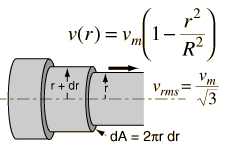

Kinetic Energy of Tube Flow
To get the kinetic energy of laminar flow in a tube, an average of the square of the velocity must be taken to account for the velocity profile. |
 |
The average of the square of the speed is given by
The average kinetic energy per unit volume of the flowing fluid can be expressed in terms of the fluid density ρ and the maximum flow velocity vm.
Poisuille's law concepts
| HyperPhysics***** Mechanics ***** Fluids | R Nave |